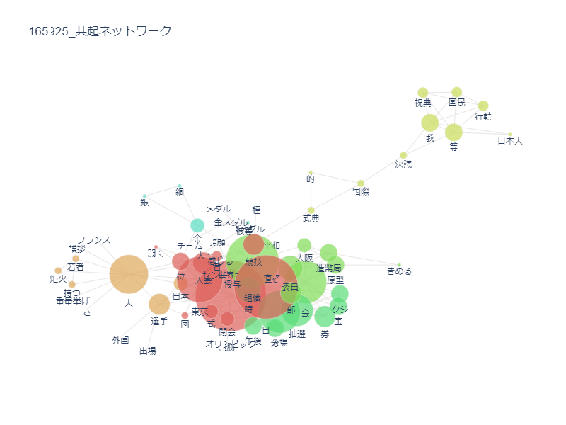
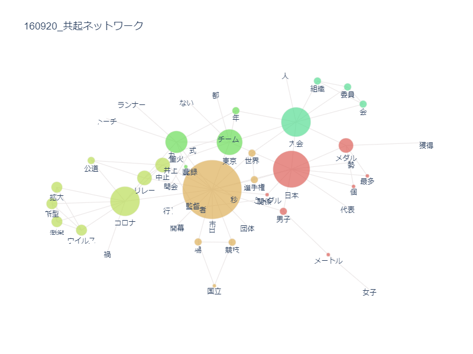

テキストマイニング
1964年の東京オリンピック
共起ネットワーク

2021年の東京オリンピック
共起ネットワーク

これらを比較して、やはり最初に目に付いたのは、「コロナ」で、21年のオリンピックがコロナにより開催について不安定になっていたのが分かる。
また、64年のオリンピックでは「式典」「祝典」があることで、21年よりも堅い様相だったのではと考えられる。
※新聞記事を探している中で気になったのは、｢天皇・皇后両陛下に選手団がご挨拶しに行った｣という記事である。まだ、戦後間もない頃だったため、今よりももっと日本国民の象徴ではなく国家元首のようなイメージが強かったのかと思えた。